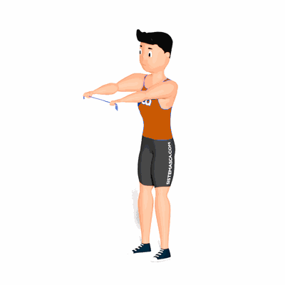

Crucifixo Inverso com Faixa Elástica

O exercício auxilia no fortalecimento e hipertrofia dos músculos posteriores do ombro, com ênfase no trapézio na face superior, medial e inferior.
Ficha Técnica
Tipo: Funcional
Grupo Muscular: Costas
Aparelho: Nenhum
Músculos: Nenhum
Como realizar
- Fique em pé com as pernas em paralelo;
- Com os braços estendidos e segurando o elástico, levante eles deixando na altura do ombro e de frente com o corpo;
- Em seguida inicie o exercício realizando uma abdução horizontal;
- Retorne a posição inicial e repita os movimentos.
 RC STORE
RC STORE